溼答答
這陣子都是陰天或是雨天，有時候只下一點點雨，有時候則淋的全身濕答答。
老是下雨的季節，讓人心情低落。
早上起床時外頭的天空整個陰到不行，如果雨衣沒弄丟的話，雖然還沒開始下雨，但是我會先穿起來，這種天氣下一秒就可能會落下大雨。
無奈雨衣已經弄丟不知道在什麼地方，趁雨還沒開始下，趕快多騎一點路，看能不能離開烏雲罩頂的範圍。
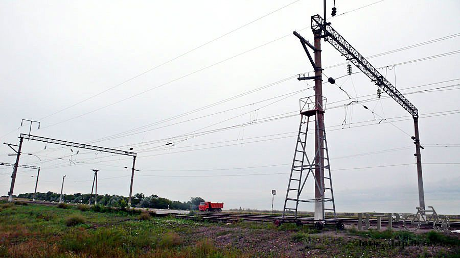
出發的時候，魯斯坦騎著單車來送行，他陪我騎到小鎮往外的交叉路口，跟我說再見。
此刻雨滴就開始一滴滴的往下落，自此一整天沒停過。
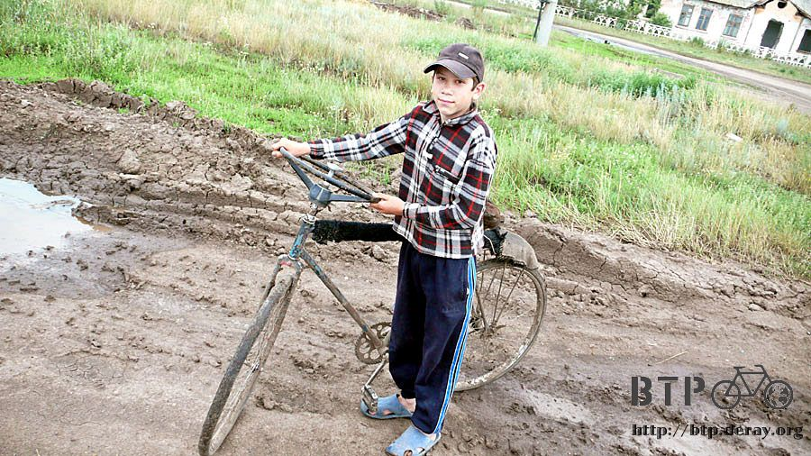
昨天就是騎到這個施工中請繞道的地方，覺得很沒力所以不想騎，今天早上還是得從這裡繼續出發。
不想走便道，所以依循著土堆上的輪胎印，直接騎在施工中的路上。
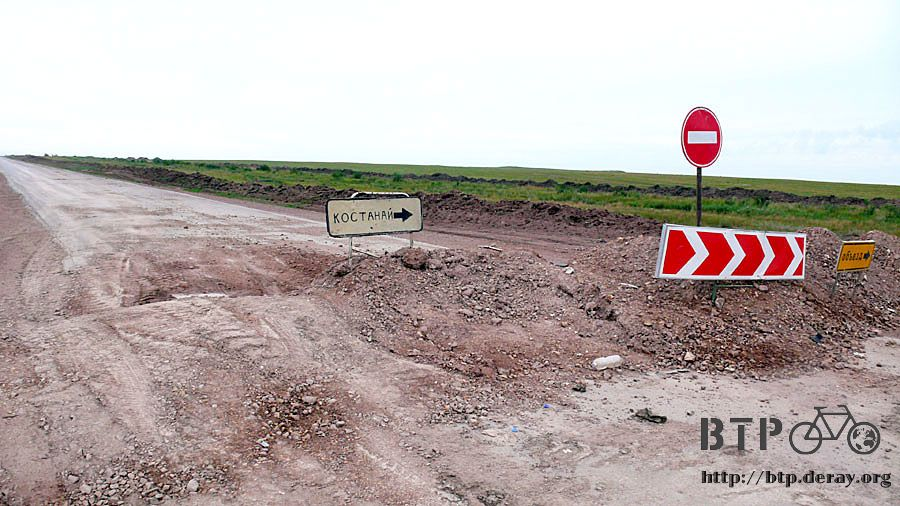
說是施工中的路，路況比起便道要好太多，但只維持了一小段路，之後就挖得亂七八糟，只好拐彎回便道繼續去受苦。
連標示道路里程的柱子都因為施工而橫躺在路邊，看了有點唏噓。
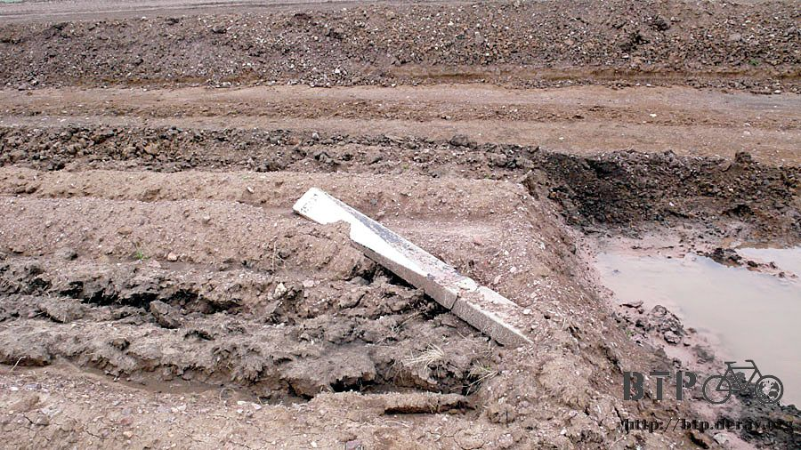
十二公里之後進入了城市，稍具規模，該有的店家都有，先去雜貨店補充零食和飲水，目前處於缺糧狀態。
店裡的商品都貼上了價錢的粉紅色貼紙，結帳的時候也一定是按計算機看數字收錢，不太有溝通上的障礙，當然也不可能殺價。
在這裡買了一大袋的巧克力餅乾，才一百元而已，光是這一袋就能讓我吃上一整天，另外還買了一瓶水。
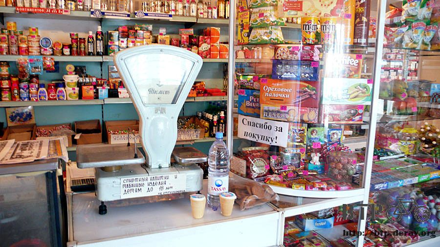
街上的招牌都很低調，大多都是純文字，讓我有看沒有懂，看到這一個紅色十字架，直覺這裡是藥局。
如果真的是藥局的話，想停下車去裡面買看看有沒有眼藥水，長時間騎車，風沙飛舞、眼睛也疲勞，眼藥水的消耗還挺快的。
仔細看這個圖案，它不只是紅色十字架而已，中間還畫了一個酒杯，裡頭盤繞著一條蛇。
真是奇怪的圖案，難不成這裡是酒吧嗎？
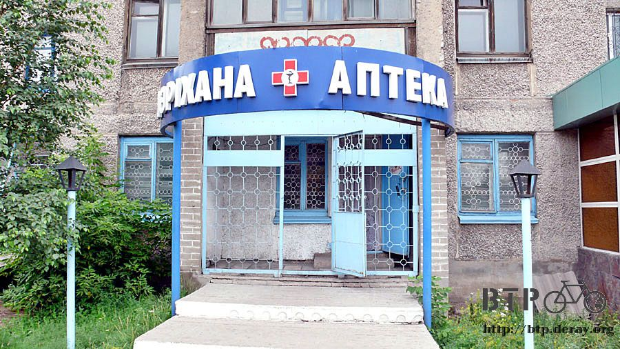
進去一看真的是藥局，但是沒有賣眼藥水，嘆氣。
找了一間餐廳吃早午餐，煎兩顆蛋加兩根香腸，再來一杯奶茶配麵包，這樣吃就很完美了。
肚子填飽了，包包裡的零食也補充了一些，飲水充足，那就出發吧～
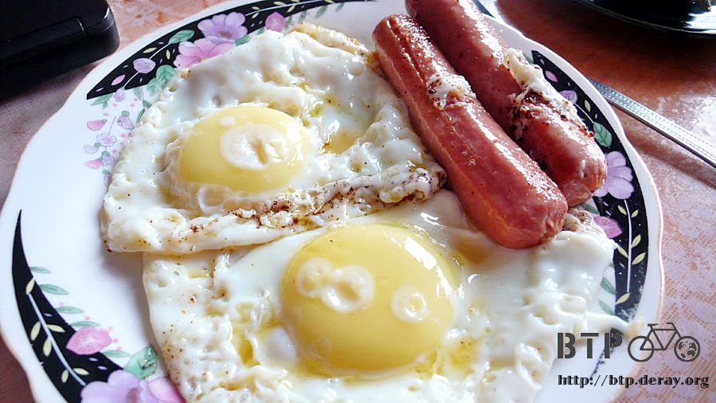
精神才振奮起來，一出餐廳就被雨給澆熄，好像比剛才還大了一點。
才剛走出城市的門，聯外的道路又被挖得亂七八糟，本來只要直直走就能通往國境，現在得邊走邊問路過的車輛，確定自己騎的路是對的。
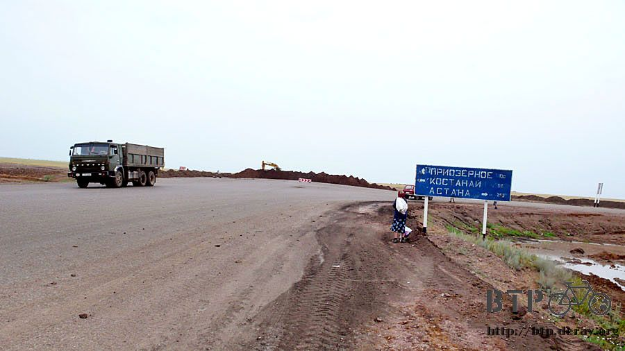
傻傻的騎了三個小時，身上被雨淋得越來越濕，空氣濕氣很重，所以怎麼吹風衣服也不會乾，反而越吹越濕冷
沒多久，身上已經無處不濕，之所以還在路上騎車，是因為兩旁都是施工中的路段，空曠且毫無遮蔽物。
雖然想休息也沒辦法，只好淋雨一直往下騎，好不容易終於看到有村落的影子，馬上進去找地方躲雨。
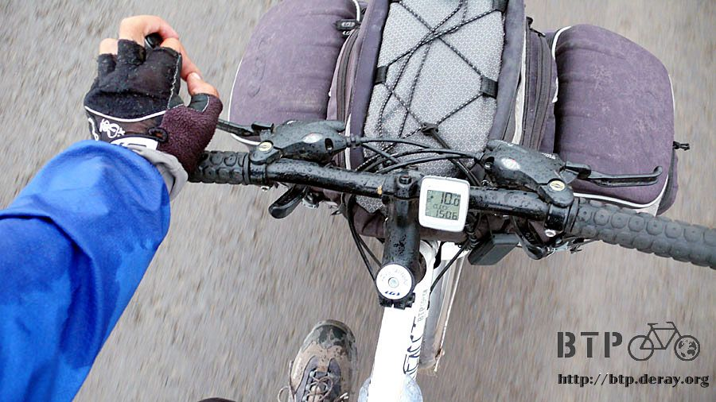
進村子的路是泥巴路，下過雨之後很滑也很鬆軟，騎著小多好幾次差點整個人滑倒，幸虧用腳撐住地面才穩住。
用騎的太危險，下車往村子裡面牽，在外頭就看到這裡有一個很高的天線塔，還有一棟水泥建築，其它都是木造的房屋。
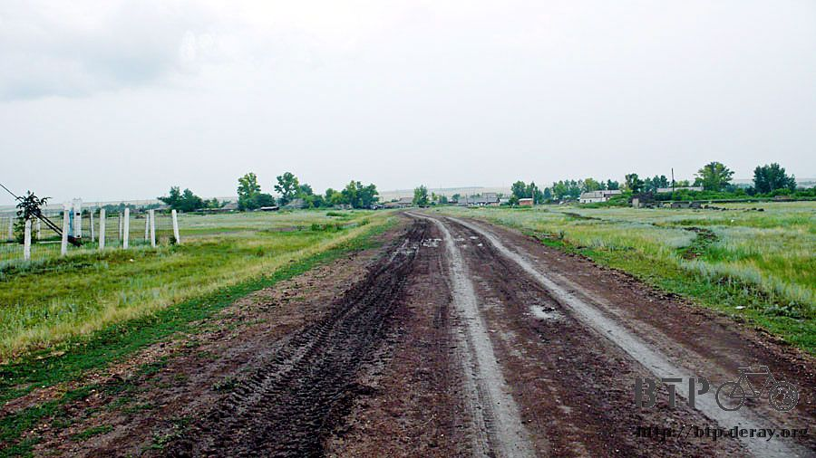
打算在水泥建築的地方躲雨，牽過去自己打開沒鎖的藍色鐵門，不算小的水泥建築沒有屋簷，其它地方也沒有可以躲雨的地方。
只有在門的入口上方有一小塊遮雨棚，剛好是小多寬度的大小，趕緊將濕答答的小多和我搬到門口。
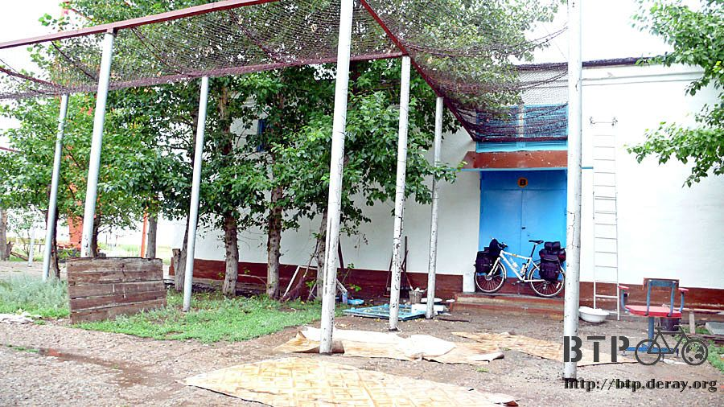
在外頭雖然不會直接淋到雨，但還是好冷，風一直吹，雨滴被吹得飄散，依然是打在身上。
敲了敲鐵門都沒回應，以為是敲門聲被雨勢蓋過，更大聲的敲門依然是無人應答。
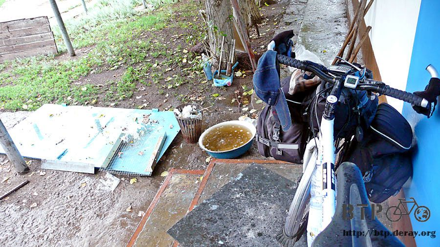
從下午四點開始窩在這裡，期盼著會有人來上班能夠開門放我進去躲雨，或是能更好心的收留我一晚上，拜託不要把我趕走。
本來想說一邊躲雨，淋濕的部分也可以趁這個機會多少乾一點，結果完全都沒有變乾的跡象。
現在就算穿著乾的衣服，只是站在這裡也會因為下雨的濕氣而受潮。
蹲在小多旁邊，這個小小的地方窩著我和小多，低頭看著一隻蜘蛛在小多的輪胎鋼絲上開始結網，這畫面真適合現在落寞的氣氛。
搞不好在我沒看見的地方，也有蜘蛛在我身上結網，天知道要等多久雨才會停？
一直等了兩個小時，總算看到有人穿著雨衣雨鞋朝這裡走過來。
看到我落魄的窩在門前，似乎不太需要再自我介紹自己是幹嘛的，我都還沒開口，就被他帶進來躲雨。
這個人是管理員，名字叫做維格特，這一棟則是電波塔。
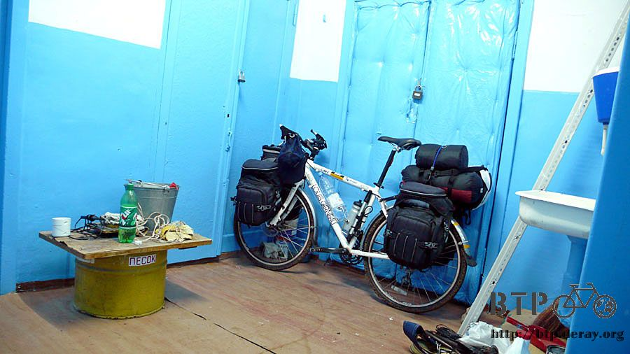
維格特問我的第一句話是『肚子餓不餓？』
一語命中，此時正是飢寒交迫，維格特在村子裡有一個朋友，也叫做維格特，他打電話請朋友帶一些吃的過來。
十分鐘後一個撐著雨傘、穿著雨鞋的人帶了簡單的食物，冷掉的燉羊雜燴、麵包和生雞蛋，配著早上買的餅乾。
除了生雞蛋我不知道該怎麼吃之外，麵包跟燉肉我都不挑嘴的吃光了。
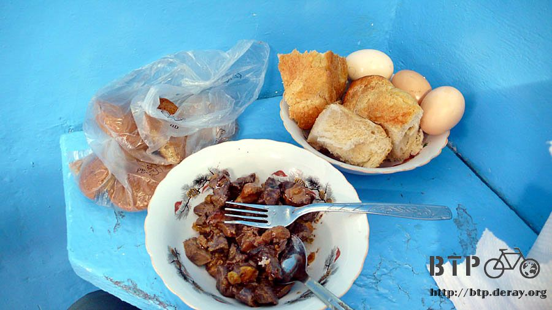
吃的都是生冷的食物，感覺有點空虛，想吃熱食可是依目前的情況看來沒那麼容易。
維格特拿出一大幅的哈薩克版本世界地圖，指著海南島的位置，說台灣在這邊？
這個問題問我就對了，用手指修正了台灣在維格特心中的地理位置之後，順便用這一張地圖跟兩個維格特說明我的單車旅行路線。
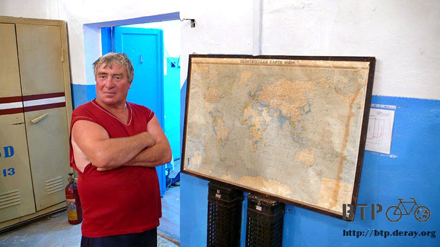
吃飽之後，我問維格特村子裡有商店嗎？
好加在這裡沒那麼小，雖然沒餐廳，但是商店有一間，我跟著從村子裡送食物來的維格特走去商店。
穿著藍白拖鞋在爛泥巴路上走路，越走自己就長得越高，因為拖鞋底下的泥巴越黏越多，
到後來簡直像踩高蹺一樣寸步難行，要找積水坑把爛泥給洗掉。
路上看見三隻雞跟我一樣在淋雨走路，本來覺得自己很可憐，看到這畫面突然開心的笑了起來，名符其實的落湯雞。
在商店裡買了蘋果汁、汽水、葡萄蛋糕和白巧克力，自己冒著雨走回電波塔，向管理員的維格特展示我的戰利品。
開了果汁兩個人配著蛋糕就這麼吃了起來，這邊雖然不豪華，但是可以擋著冷風和濕答答的天氣，已經讓我別無所求。
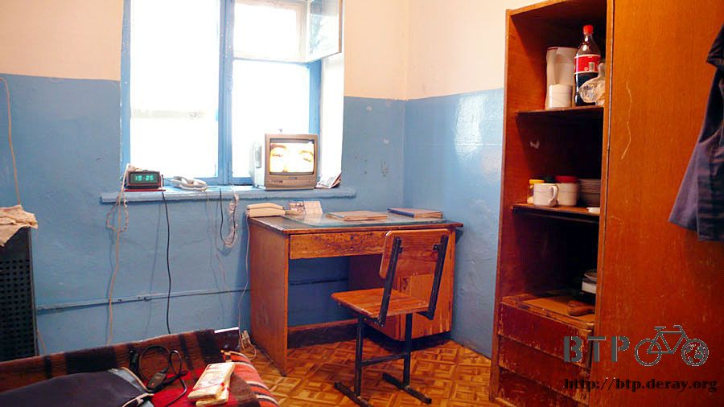
如果現在有燃料的話，我會試著用汽化爐燒開水泡點熱紅糖來喝，下次看到加油站順便買點汽油好了。
吃飽後，維格特就說今天我就住在這裡吧，這樣的天氣別再騎車了。
本來只是想休息個一陣子等雨停或是轉小就上路，但是得到了住宿的邀請之後，我就開始將包包全部展開，濕氣極重，不通風一下會很慘。

晚上就在廠房裡搭帳篷睡覺，期盼明天睡醒是個晴空萬里的好天氣，我絕對不會再嫌太陽大或是天氣熱了，真的。
繼續閱讀：7.14 好黏的土
哈薩克-堅戈－ 1：0.26 台幣
7.13 |
總計：945元 |
雜貨店水、餅乾、冰淇淋245元、早午餐奶茶、煎蛋、熱狗200元、雜貨店蘋果汁、可樂、葡萄蛋糕、白巧克力500元 |
|